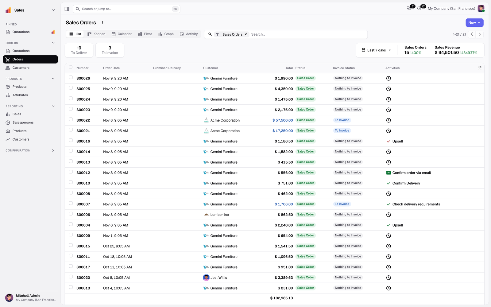
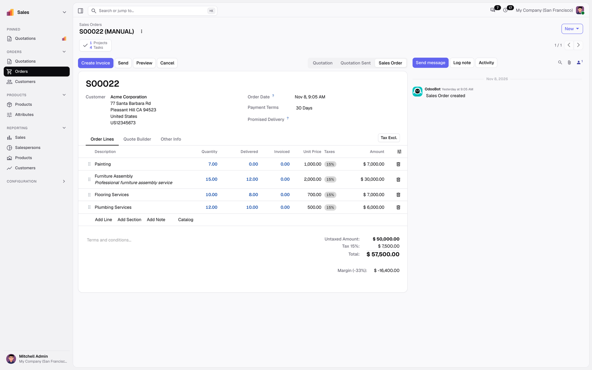
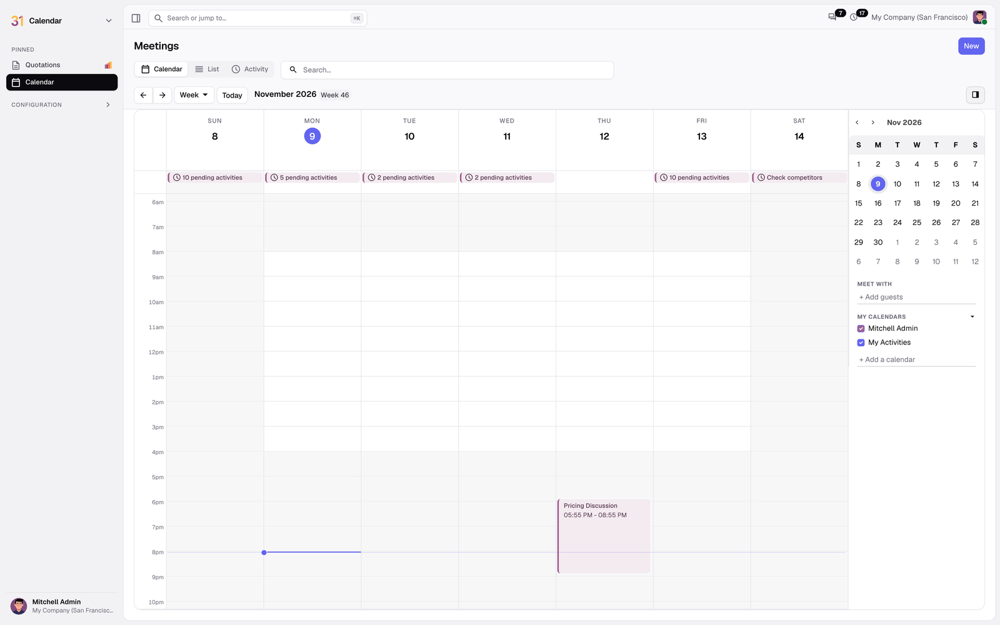
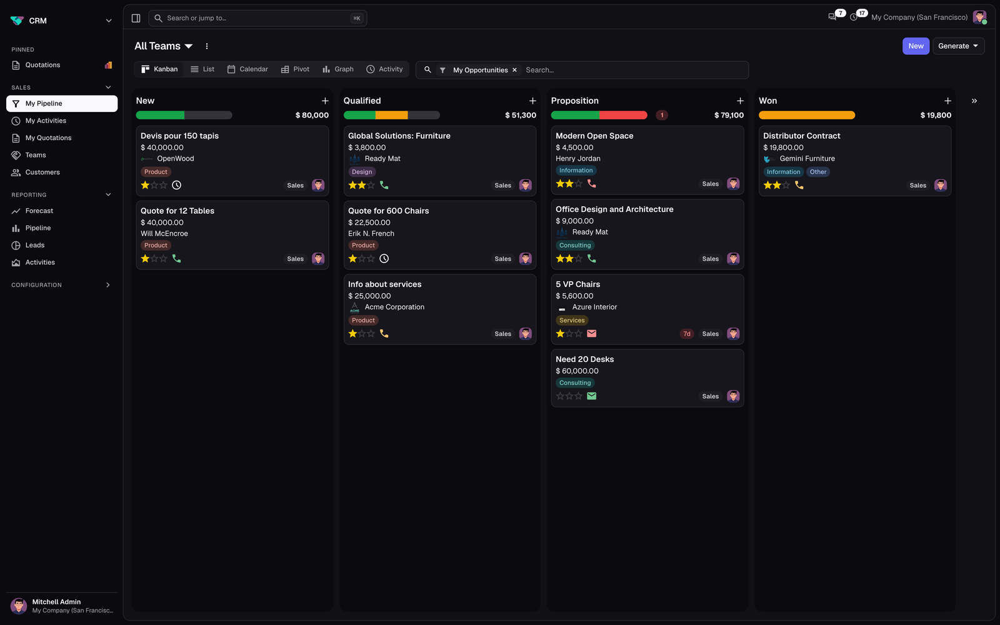
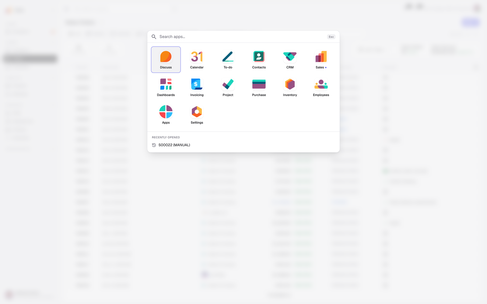
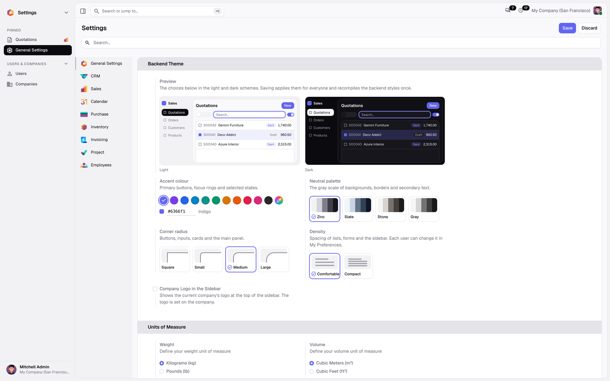

A sidebar with your apps and menus, an app launcher, a clear page header, light and dark schemes and your own accent colour. Lists, forms, kanban, calendar and reports keep everything Odoo does; they simply read better.

Lists and kanban columns as cards, forms with a calm sheet, a calendar with tinted events, pivot and graph in the accent.




Settings › General Settings › Backend Theme: pick one of eleven accents or your own colour, a gray palette, the corner radius and the default density. The preview shows the result in light and dark before you save.
Saving compiles the styles once for everyone; the theme never sends requests to outside servers, the fonts ship with the module.
